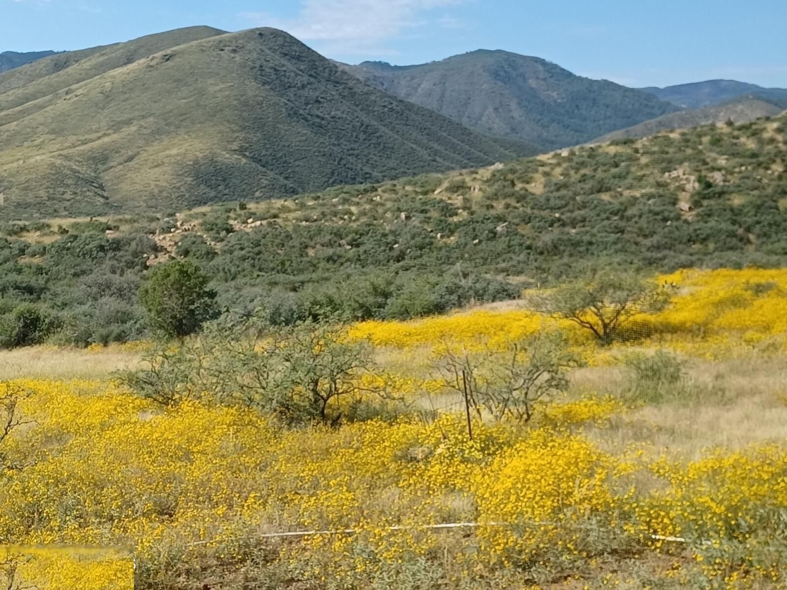
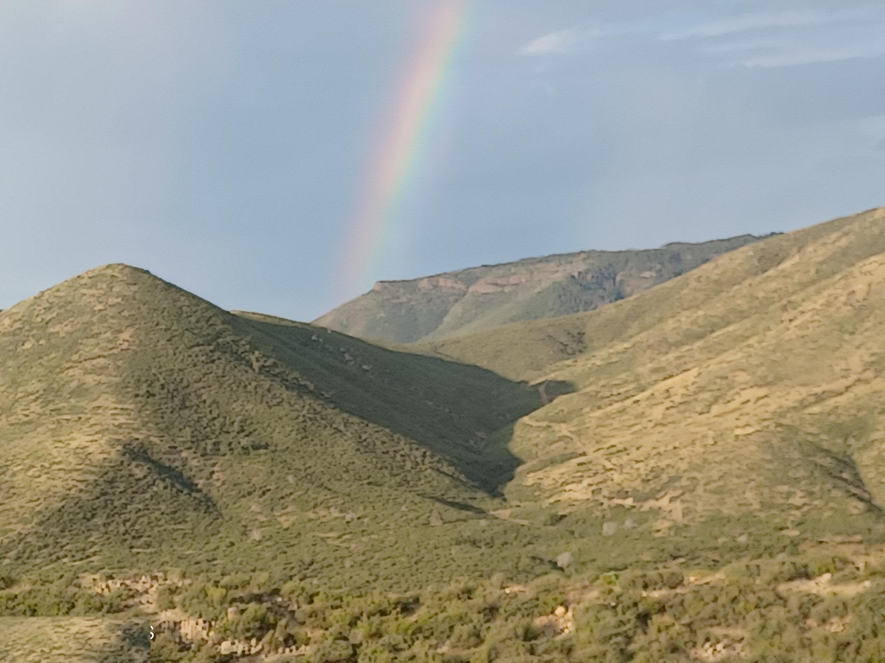
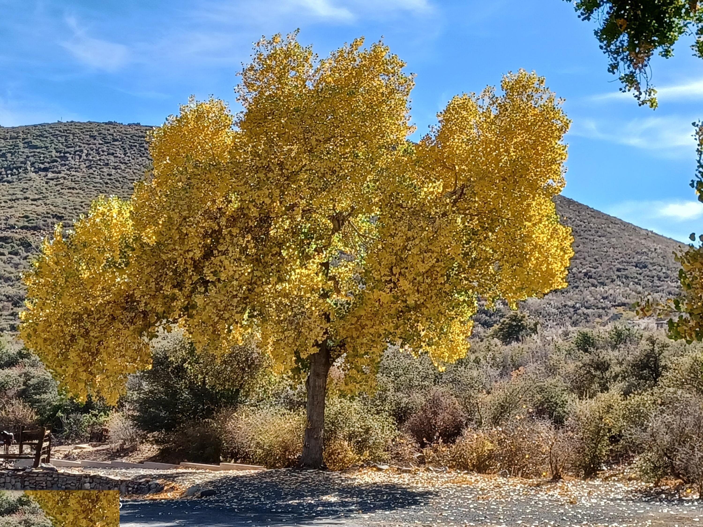

Four True Seasons
At 6,000 feet in the Bradshaw foothills, Goswick Ranch experiences real seasonal change — a rarity in Arizona and a defining reason why owners chose to build here.

Wildflower Season
Brittlebush, desert scrub wildflowers, and the return of hummingbirds mark April and May. Extended into early June in good rainfall years.

Monsoon Skies
From mid-July through September, dramatic afternoon thunderstorms roll across the Bradshaws. The hillsides turn vivid green — the kind of Arizona summer that Phoenix residents drive hours to experience.

Golden Color
Cottonwoods along Big Bug Creek turn brilliant gold. The air turns crisp and clear. October and November bring the best dark-sky viewing of the year.

Snow in the Desert
Light snowfall dusts the landscape several times each winter, with heavier snows at higher Bradshaw elevations. Cold, crisp, transparent skies make for exceptional stargazing.